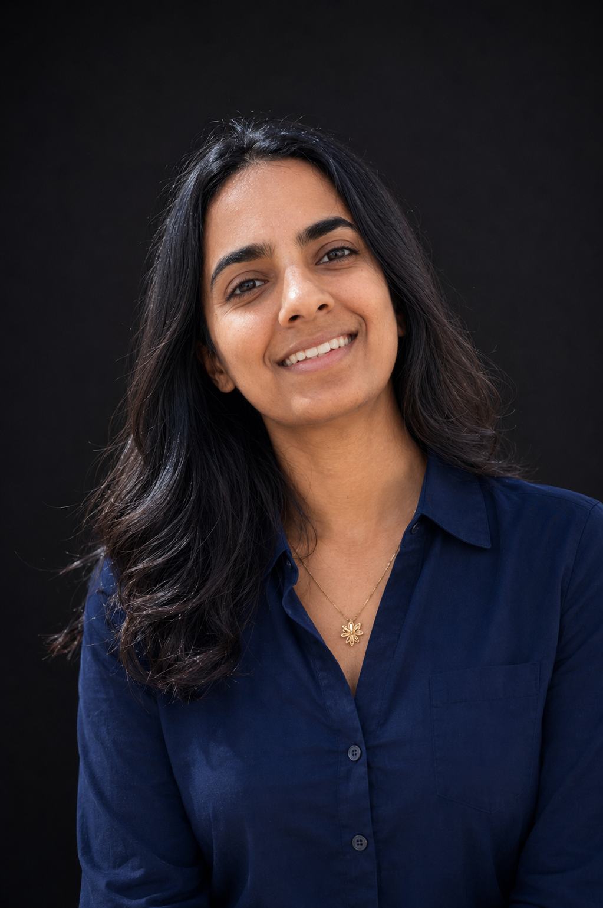

הדרך מתחילה בדיוק
העשייה שלי מונעת מתוך זיקה עמוקה לשני עולמות המשלימים זה את זה: הדיוק המחקרי והטכנולוגי, והחוסן המנטלי האנושי. אני מאמינה שבין אם מדובר בפיצוח אתגר אלגוריתמי ובין אם בניווט מתוך מורכבות אישית – הדרך תמיד מתחילה בדיוק.
העשייה שלי מונעת מתוך זיקה עמוקה לשני עולמות המשלימים זה את זה: הדיוק המחקרי והטכנולוגי, והחוסן המנטלי האנושי. אני מאמינה שבין אם מדובר בפיצוח אתגר אלגוריתמי ובין אם בניווט מתוך מורכבות אישית – הדרך תמיד מתחילה בדיוק.
את היכולת לצלול אל מרחבי ידע חדשים במהירות ולראות מערכות בצורה רחבה ומערכתית, גיבשתי במהלך שבע שנות שירות כעתודאית וקצינה בצה״ל. משם המשכתי להעמקת התשתית המדעית והמחקרית שלי, וכיום אני לקראת סיום תואר שני מחקרי (M.Sc) בתחום המיפוי והגיאו-אינפורמציה בטכניון.
בעולם הטכנולוגי, המומחיות שלי הינה בפיצוח משימות אלגוריתמיות, ביצוע מחקר יישומי וייעוץ תיאורטי חכם בעולמות ה-Spatial AI. החוזקה שלי טמונה בחיבור שבין הידע האקדמי הרחב שבראש לבין היכולת לתרגם אותו כיום למימוש מעשי ומהיר בעזרת כלי בינה מלאכותית מתקדמים. את הידע הזה אני מביאה איתי גם אל הבמה והכיתה, דרך הרצאות טכנולוגיות, קורסים והדרכות ייעודיות לחברות מיפוי וארגונים.
לצד העבודה האנליטית, מסע החיים האישי שלי עיצב בי חוסן נפשי ומנטלי בלתי מתפשר, מתוך התמודדות יומיומית ועיקשת עם פוסט-טראומה מורכבת שאינה ניתנת להעלמה. בעקבות הניסיון החי הזה, פיתחתי הבנה עמוקה של האתגרים השקופים המלווים את הנפש האנושית, ומצאתי את הכלים לנווט מתוך נקודות משבר ואי-ודאות אל עבר תפקוד שיא ומצוינות.
את התובנות הללו אני מתרגמת לעשייה יישומית בשטח: החל מליווי מקצועי והענקת כלים לצוותי טיפול ושיקום, דרך הובלת תהליכי חוסן בארגונים, ועד להרצאות השראה ומנטורינג לבני נוער ולנשים השואפות והשואפים לפרוץ תקרות זכוכית ולהוביל מתוך נקודות פתיחה מורכבות.
השילוב הזה – בין החשיבה המחקרית וההדרכה הטכנולוגית לבין היכולת לפתח חוסן אנושי – הוא הערך המאוזן והאמיתי שאני מביאה איתי לכל מפגש, פרויקט או הרצאה.